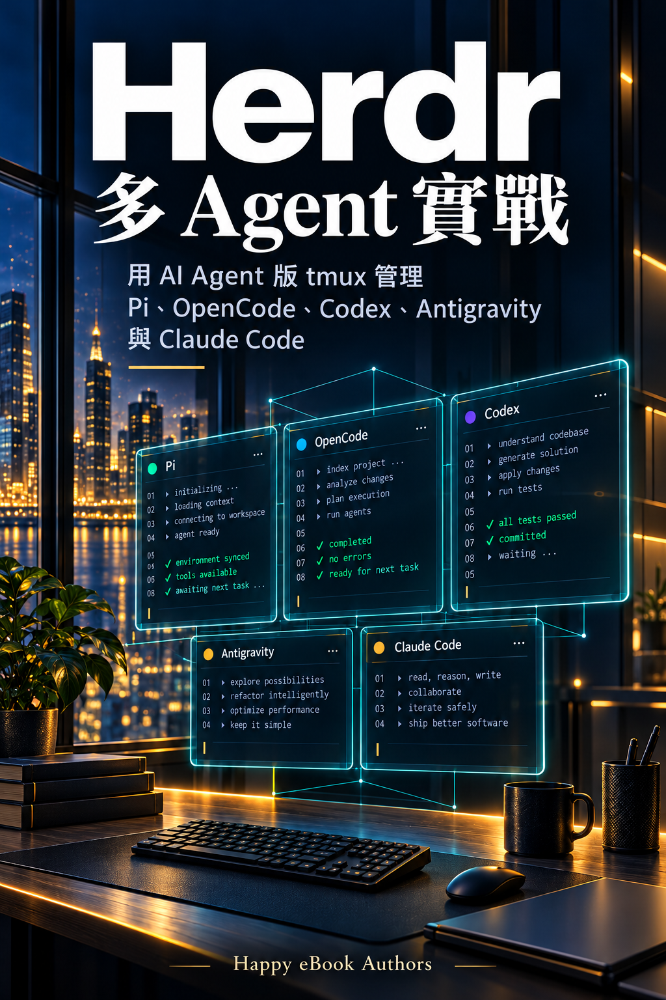

認識團隊與出版理念
Happy eBook 是專注於資訊教育、技術寫作與數位出版的獨立出版品牌。團隊統籌吳進北（Jack Wu）負責出版方向規劃、專案協調、內容統籌及品質管理，團隊透過協作將技術研究與教學經驗轉化為實用的學習資源。
從一篇完整教學開始，實際完成範例，再依需要選擇延伸教材。書籍與網站教材分別標示閱讀方式；作品介紹不代表目前可購買。
AI、Python、iPAS AI、Prompt Engineering 與數位出版教材，從「看得懂」到「做得出來」。


Happy eBook 把 AI、程式、證照與英文教材整理成可以直接行動的學習成果，讓每一本書都有清楚用途。
不用一次學完所有工具。先理解 AI 怎麼協作，再用 Prompt 與 Python 做出可檢查的小成果，最後整理成自己的專案或教材。
理解生成式 AI、資料判讀與工具使用限制。
練習描述需求、拆解任務、檢查輸出與修正方向。
把重複工作變成小程式，學會資料、檔案與流程整理。
把學到的內容做成教材、網站、書籍或可分享作品。
我們把複雜工具拆成初學者能跟上的步驟，保留實作、檢查與複習的節奏。網站不是單純放文章，而是讓讀者可以依主題、系列與作品逐步探索。
用白話與例子解釋觀念，先讓讀者知道自己正在學什麼。
每個主題都盡量連回實作任務，讓學習有可驗證的成果。
以電子書與靜態網站保存內容，適合課後查找、備考與自學。
封面、書頁與分類清楚，讓教材更像作品，也更容易被推薦。